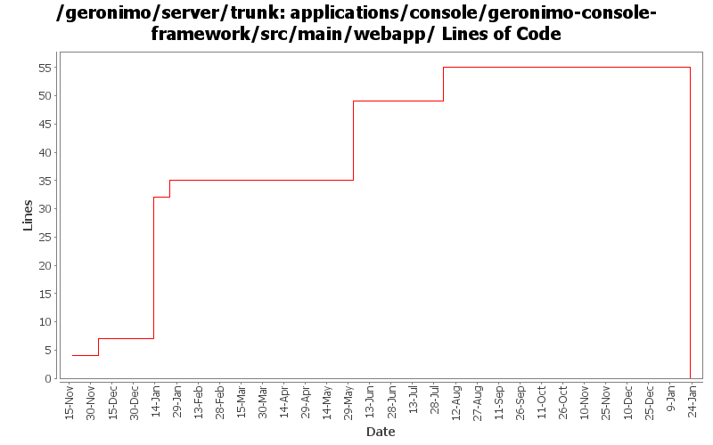

[root]/applications/console/geronimo-console-framework/src/main/webapp
 WEB-INF
(0 files, 0 lines)
WEB-INF
(0 files, 0 lines)
 aggregation
(0 files, 0 lines)
aggregation
(0 files, 0 lines)
 classes
(0 files, 0 lines)
classes
(0 files, 0 lines)
 config
(0 files, 0 lines)
config
(0 files, 0 lines)
 services
(0 files, 0 lines)
services
(0 files, 0 lines)
 data
(0 files, 0 lines)
data
(0 files, 0 lines)
 xml
(0 files, 0 lines)
xml
(0 files, 0 lines)
 tld
(0 files, 0 lines)
tld
(0 files, 0 lines)
 js
(0 files, 0 lines)
js
(0 files, 0 lines)

| Author | Changes | Lines of Code | Lines per Change |
|---|---|---|---|
| Totals | 36 (100.0%) | 86 (100.0%) | 2.3 |
| kevan | 15 (41.7%) | 28 (32.6%) | 1.8 |
| ccardona | 1 (2.8%) | 25 (29.1%) | 25.0 |
| dwoods | 8 (22.2%) | 20 (23.3%) | 2.5 |
| gawor | 2 (5.6%) | 6 (7.0%) | 3.0 |
| vamsic007 | 1 (2.8%) | 5 (5.8%) | 5.0 |
| jdillon | 9 (25.0%) | 2 (2.3%) | 0.2 |
(GERONIMO-3747) Moved applications/* to plugins/*
0 lines of code changed in 8 files:
added axis, axis2, and cxf to the list of components displayed in the console
6 lines of code changed in 2 files:
GERONIMO-3264 Web accessibility updates for Admin Console - part 1
2 lines of code changed in 2 files:
GERONIMO-2375 Console has invalid XHTML in the db pool
2 lines of code changed in 1 file:
GERONIMO-1413 Console needs to set JSP and Servlet contentType to UTF-8
16 lines of code changed in 5 files:
Std props
2 lines of code changed in 1 file:
GERONIMO-2690 Fix OutOfMemoryErrors in ClassLoader view -- thanks for the patch Rakesh! Also, set svn properties for files and remove tab characters from source files.
28 lines of code changed in 1 file:
GERONIMO-2689 : New View for JNDI name in all the contexts
GERONIMO-2690 : New view for all the classloaders and classes loaded in it
GERONIMO-2691 : New view for the hierarchical modules and linked dependencies
Thanks Rakesh!
25 lines of code changed in 1 file:
GERONIMO-2625 Geronimo Console: login page prevents using username, password longer than 25 characters for login
o Merging rev 482672 from branches\1.2
o Removed the maxlength attribute in the username and password form input tags
5 lines of code changed in 1 file:
GERONIMO-2537 Integrating yet another patch supplied by Jay McHugh. Thanks Jaysvn status! Adds apache license header to files in applications/
0 lines of code changed in 14 files: